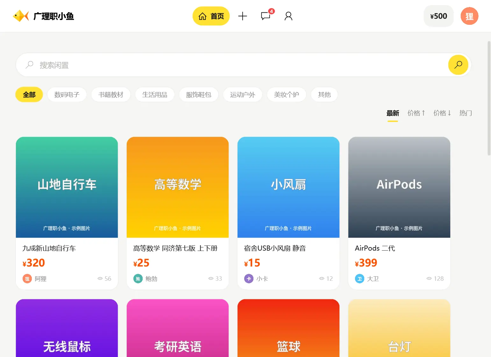
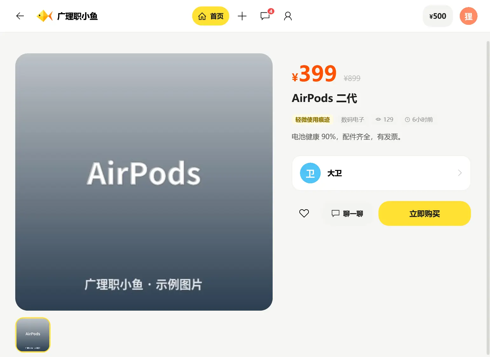
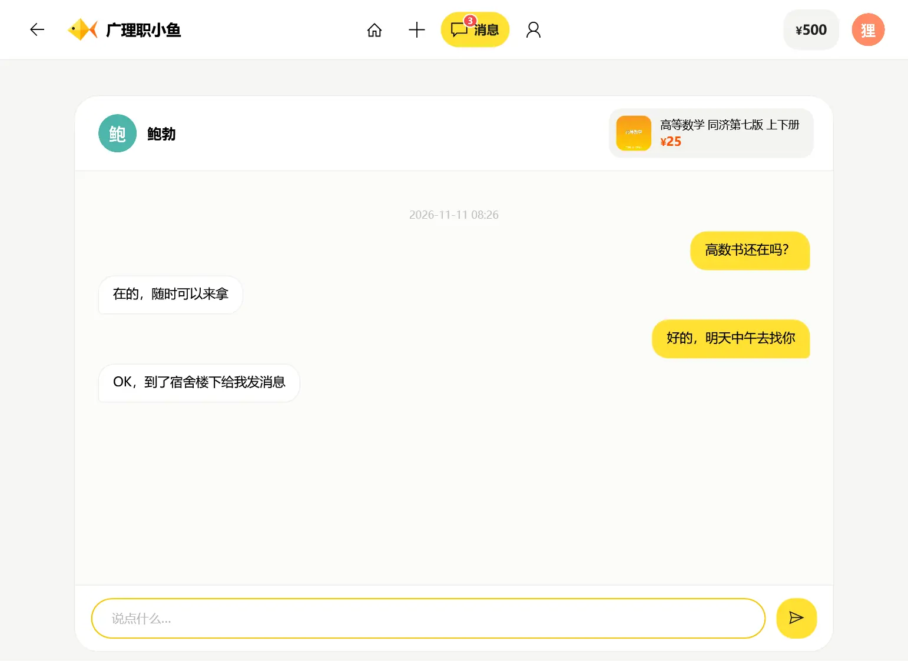
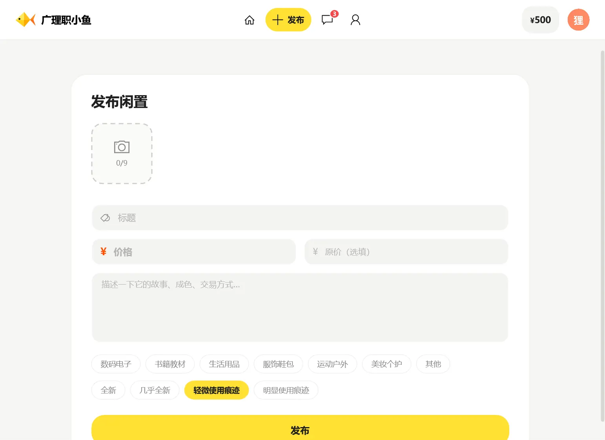

「C 与 C#」课程作品
校园里的闲置，
同学之间直接交易
服务器用 C 语言编写，客户端用 C# WPF 编写。注册后就能发布闲置、搜索商品、私信卖家、下单购买。 所有金额都是模拟的，不涉及真实支付。

三步开始
-
1
下载并运行
下载后双击 exe 直接运行，不用安装。第一次启动要解压运行库，稍等几秒。
-
2
用邮箱注册
在登录页点“注册新账号”，填邮箱后会收到一封验证码邮件。之后用户名或邮箱都能登录。
-
3
逛、卖、聊、买
新账号可以在“我的”里充值模拟余额，然后下单；卖家发货、买家确认收货，交易就完成了。
功能
浏览与搜索
按分类和关键词找商品，可以按最新、价格、热度排序。
发布闲置
上传图片、填写成色和价格；可以编辑、下架、重新上架。
私信聊天
和卖家一对一聊天，新消息实时推送，带未读提醒。
模拟交易
下单扣款、卖家发货、确认收货、取消退款，订单状态实时更新。
内容安全
敏感词拦截、举报和申诉；商品和私信由 AI 辅助审核，拿不准的交给管理员。
账号安全
邮箱验证码注册、找回密码、修改密码。
界面预览 （示例数据）



打不开？
提示“Windows 已保护你的电脑”
这是 Windows 对没有购买代码签名证书的程序的统一提示。点“更多信息”，再点“仍要运行”即可。
提示被“智能应用控制”阻止
部分新装的 Windows 11 开启了“智能应用控制”，它会直接阻止所有没有签名的程序，没有“仍要运行”的选项。请换一台电脑运行。
浏览器提示“不常下载”或“可能有害”
同样是因为程序没有签名、下载的人少。在浏览器的下载列表里选择“保留”即可。
登录时提示连不上服务器
客户端需要联网。请检查网络后再试；如果使用了代理或校园网认证，确认已经连上互联网。
怎么确认下载的文件没有被改过？
在 PowerShell 里运行 Get-FileHash 文件名.exe，结果应为：
{{SHA256}}